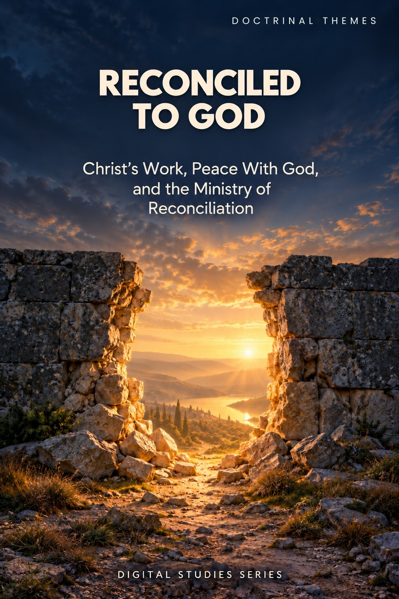
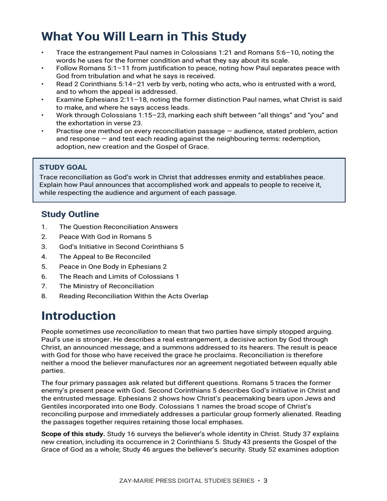
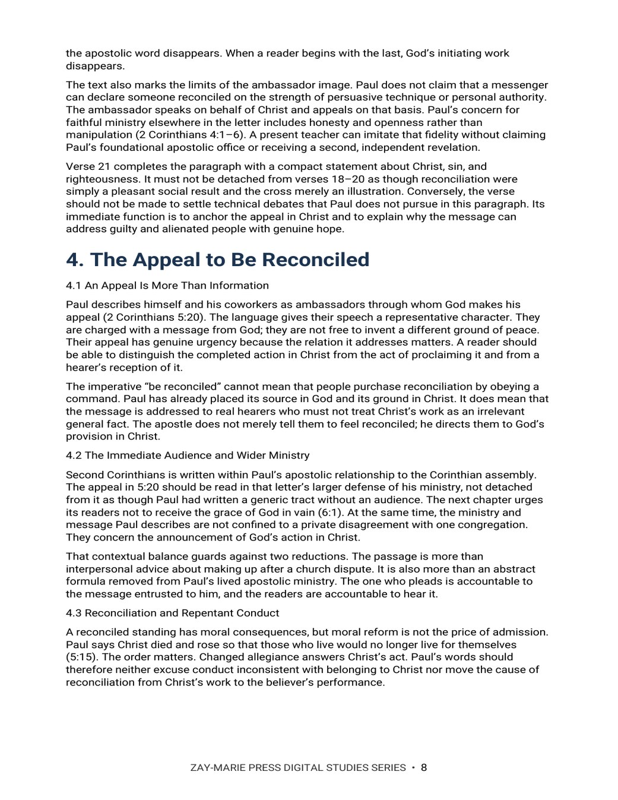

Reconciled to God
Christ’s Work, Peace With God, and the Ministry of Reconciliation
A close reading of Romans 5, 2 Corinthians 5, Ephesians 2, and Colossians 1
What does Paul mean when he says former enemies have peace with God? This study follows the order of God’s initiative in Christ, the accomplished work, the entrusted word, and the appeal to hearers. It distinguishes a reconciled standing from a passing feeling of closeness.
The study also asks how Christ’s peace shapes one Body, how far Colossians’ “all things” language reaches, and why a broad reconciling purpose cannot by itself prove that every person has personally received salvation.
From Former Enmity to Peace With God
Romans 5 locates peace after justification by faith and places it alongside hardship, not in place of it. Second Corinthians 5 names God’s initiative in Christ and the ministry and word entrusted to Paul and his coworkers. Ephesians 2 joins peace among former Jew and Gentile divisions to access to God in one Body. Colossians 1 speaks broadly of Christ’s reconciling purpose and then directly addresses people formerly alienated. Each passage contributes to the doctrine without surrendering its own audience and argument.
Readers who have studied Study 53 (Redemption) may wonder whether this study repeats its treatment of Christ’s blood, since both examine benefits secured through his death. Study 53 asks what bondage redemption answers and what price secures deliverance; Study 55 asks what becomes of former enemies in relation to God and why Paul announces an appeal to be reconciled. Readers of Study 54 (Justification) will encounter Romans 5:1 in both studies. Study 54 establishes the righteous verdict received by faith; this study follows the peace named in that verse and the received reconciliation of Romans 5:10–11. Study 37 (What Does Paul Mean by “New Creation”?) examines 2 Corinthians 5:17; this study follows verses 18–21 to distinguish God’s reconciling work, the entrusted message, and the hearer’s response. Study 52 (Sonship and Adoption) addresses standing and inheritance, while this study addresses enmity and peace. The question this study alone follows through all four principal passages is: how does God’s action in Christ establish peace, and how does Paul’s appeal relate to that accomplished work?
How These Studies Relate
Study 55 traces former enmity, God’s reconciling action in Christ, received peace, and the entrusted appeal. The related studies answer neighboring questions without making their terms interchangeable.
Study 53 — Redemption Examine the bondage answered and price paid through Christ’s blood; then return here to ask what relationship of peace that work establishes.
Study 54 — Justification Study the righteous verdict received by faith; Romans 5 then shows how justified believers have peace with God.
Study 37 — What Does Paul Mean by “New Creation”? Read 2 Corinthians 5:17 in its own argument before following verses 18–21 into God’s reconciling work and the appeal.
Study 52 — Sonship and Adoption Compare peace with God to the distinct standing and inheritance named by adoption.
Follow Paul’s Argument From Work to Appeal
Former Enmity and Present Peace
Read Romans 5:1–11 for the former condition, Christ’s initiative, the benefit received, and confidence amid hardship.
God’s Initiative in Christ
Trace the verbs in 2 Corinthians 5:18–21: God acts, entrusts a word, and speaks through ambassadors.
The Appeal to Be Reconciled
Compare how 2 Corinthians 5:18–20 describes Christ’s work, the proclamation and the hearer’s appeal, noting the verbs for each.
Peace in One Body
Follow Ephesians 2:11–18, noting the former distinction Paul names, what Christ is said to make, and where access leads.
The Reach of “All Things”
Mark each shift between “all things” and “you” in Colossians 1:19–23, and the exhortation in verse 23.
Ministry and Conduct
Examine what 2 Corinthians 5:18–20 says ambassadors announce, and how Romans 12:18 words the believer’s own conduct toward others.
Read the Passages in Their Own Contexts
Romans 5:1–11
Peace with God, former enmity, and reconciliation received through Christ.
2 Corinthians 5:14–21
God’s action in Christ, the entrusted word, the ambassador, and the appeal.
Ephesians 2:11–18
Christ’s peace among former divisions and access to the Father in one Body.
Colossians 1:19–23
“All things,” the formerly alienated “you,” and the stated gospel exhortation.
Romans 11:11–15
The phrase “reconciling of the world” as it appears in Paul’s argument about Israel.
Romans 12:18
Paul’s instruction on living peaceably with all, and what he says depends on the believer.
A Distinction That Guides the Whole Study
God acts in Christ; Paul announces the work and delivers the appeal.
Reconciliation is not a mood the believer manufactures, nor can the hearer’s response be exchanged for Christ’s reconciling work. The study asks readers to follow the movement of each passage before drawing a doctrinal conclusion.
Preview the Study Before You Purchase
Click any page to enlarge it for reading.



What You Will Learn
See the study’s goal, outline, and the question it sets out to answer.


The Appeal to Be Reconciled
See how the study reads Paul’s appeal in 2 Corinthians 5:20 within its letter and its audience.
A Focused Study for
Reading and Teaching
16-Page Digital PDF
The approved cover and 15-page interior with a numbered title page and table of contents.
Eight Teaching Sections
Move from the question reconciliation answers through Romans, Corinthians, Ephesians, and Colossians to ministry and application.
Key Distinctions
Keep work and message, scope and reception, and reconciliation and neighboring benefits distinct.
Scripture-Tracing Exercise
Record audience, former condition, divine action, and warranted conclusion in each passage.
Teaching Outline
Use a six-part framework for presenting the doctrine clearly.
Guided Further Study
Investigate peace, ministry, corporate unity, and the scope of the passages with directed questions.
Reconciled to God
16-page digital PDF · For personal use